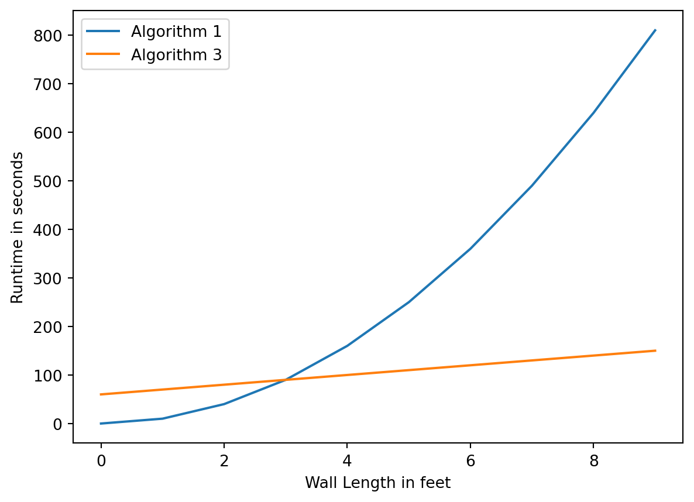
Introduction to Algorithms
1 Introduction
In this lesson, you will learn about one of the most fundamental concepts in computer science: algorithms.
Definition
An algorithm is a detailed sequence of steps that describes how to solve a problem or accomplish some task.
First, consider the process of identifying problems and their possible solutions, and breaking those solutions down into a sequence of steps. One way to do this is via simple to-do lists. Consider the problem of getting to class in the morning. Assume that you have just woken up (that is, after you hit the snooze button a good dozen or so times). What steps did you take to prepare and get to class? A possible list of steps is:
get out of bed
brush teeth
take shower
get dressed
eat breakfast
grab book-bag
walk/bike/drive to classThis to-do list is actually a useful way to tell someone who didn’t know what to do in the morning to prepare to get to class, what to do.
Another example of a problem is that of baking an apple pie. What would a to-do list that would show someone who didn’t know how to bake an apple pie look like? Could there be multiple ways of baking apple pie? If so, how can we determine which one is the best? Truly, this is subjective; however, the idea of picking a best solution is one that is required in computer science.
A possible solution to baking an apple pie as a to-do list may look like this:
make the dough
make the apple goop
combine the two
bake the dough with the goop
eat hot apple pie (with vanilla ice cream, of course)What does an algorithm that describes how to bake apple pie in the best manner mean? Is it the algorithm that takes the shortest time to produce hot apple pie? Is it the algorithm that uses the fewest ingredients? Is it the algorithm that makes less of a mess in the kitchen and therefore requires less cleanup? These questions are designed to illustrate that the notion of best algorithm is many times quite subjective and does not always have a definite (or even a single) answer. However, the comparison of algorithms numerically to show the performance of one against another is quite important in computer science. This will help in determining if one is better than another, with the end goal being to identify a best algorithm.
Does a wrong algorithm for producing apple pie exist? What solutions or algorithms will not work? What happens if a person uses blueberries instead of apples? Is the original problem of baking an apple pie solved then?
2 Problem statements: wrong vs. right algorithms
It is important to define standard ways of representing problems so that anyone who reads about a problem can understand what it actually is.
Definition
A problem statement is a formal way of defining a problem that contains a description of the conditions at the start of the problem solving process (also known as inputs), and a description of the valid solutions (also referred to as outputs).
For example, if a problem was to add three numbers and produce the sum, what would the inputs be? The answer, of course, is the three numbers! What would the output be? Clearly, the sum of those three numbers. If a problem was to determine the amount of income tax owed this year, what would the inputs be? Your income. And the output? The amount of tax owed this year. The following figure illustrates the sum example (generally on the left, and specific to the sum of three numbers on the right):
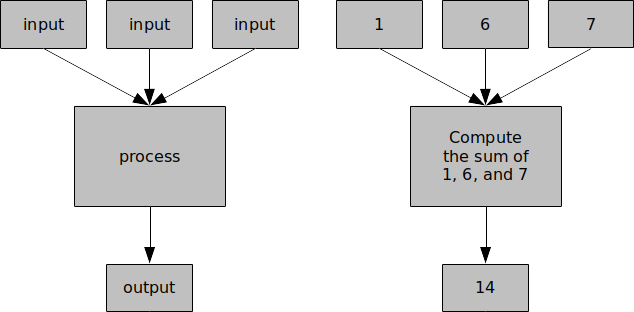
Consider the producing apple pie problem. What would the possible inputs for the algorithm be? What would its valid (or correct) output(s) be? One way of telling if an algorithm is correct is whether or not it produces the valid output defined in the problem statement. If an algorithm produces blueberry pie when the output statement stated that it was required to produce apple pie, then that algorithm is a wrong solution. On the other hand, if the output is an apple pie (even if the algorithm instructs you to throw away your ingredients and then buy an apple pie from the grocery store), then that algorithm is technically correct (even though it may not be very efficient).
3 Step breakdown and control flow
Consider the get to class algorithm. It consisted of steps such as brush teeth, get dressed, and eat breakfast. Some of these steps can actually be defined as problems of their own, which themselves require different algorithms in order to be successfully completed. What this means is that some of these steps can be broken down into their own algorithms with a separate to-do list. We call these sub-steps. A possible algorithm for the problem of getting dressed is:
put on underwear
put on shorts
put on shirt
put on socks
put on shoesThis illustrates that we can zoom in to any step in an algorithm and break it down into a series of smaller steps. Note that it is possible to arrive at a trivial step that does not require any smaller steps or that does not have a simpler way to describe it.
So what should be done to our original get to class algorithm? Should getting dressed be replaced with the five new sub-steps identified above? Is the overall solution more correct or less correct if we do that? In the end, both solutions work and neither is specifically better than the other. It all depends on the desired level of detail. If the person for whom the algorithm was intended for knew how to get dressed, then a separate algorithm to explain that would not be needed. However, if the person didn’t know how to get dressed, then these sub-steps would be very important.
Let’s go back to the producing apple pie problem. What do you think would happen if the order of the steps was changed in the proposed solution? What if the raw ingredients used to make the dough and goop were baked before putting them together? In this case, there would be a very messy oven instead of an apple pie. What if the apple goop was made before making the dough? In this case, apple pie would still be the delicious result. There are times when the order in which the steps of an algorithm are carried out matters a lot and other cases when it doesn’t matter as much.
Consider the get to class algorithm again. What would happen if the order of the steps was changed? Imagine getting dressed before taking a shower. Imagine walking/biking/driving to class before getting dressed. Let’s not. Could a shower be taken before brushing teeth? Could breakfast be eaten before brushing teeth?
Definition
Control flow is the order in which the instructions in an algorithm are evaluated or executed.
In the examples considered so far, the control flow of algorithms has been the order in which the steps were listed. Each step is evaluated or performed until it is complete, and then we move on to the next step. Completing all the steps completes the to-do list, thereby completing the algorithm. Numbering the items listed in a to-do lists is an easy way of detailing the order in which the steps should be completed. A possible numbered solution to the get to class algorithm is:
1. get out of bed
2. brush teeth
3. take shower
4. get dressed
5. eat breakfast
6. grab backpack
7. walk/bike/drive to classWe say that flow of control begins at step 1, flows to step 2, then to step 3, and so on. This means that step 1 is completed first before attempting step 2. Step 5 should not be done before step 4 is completed.
What about the get to class algorithm in which separate sub-steps for get dressed were specified (step 4 in the algorithm above)? To combine the two algorithms, numbers can be assigned to the steps in the get dressed algorithm to show the order in which they will be executed in relation to the get to class algorithm – which will now look like this:
1. get out of bed
2. brush teeth
3. take shower
4. get dressed
10. eat breakfast
11. grab backpack
12. walk/bike/drive to classThe get dressed algorithm will now look like this:
5. put on underwear
6. put on shorts
7. put on shirt
8. put on socks
9. put on shoesNotice how steps 1 through 4 of the go to class algorithm are the same and done in the same order. However, we shift the flow of control to the get dressed algorithm which used to be step 5 in the original. We have to execute the get dressed step (meaning its sub-steps) completely before proceeding to the eat breakfast step. However, the get dressed step consists of five sub-steps, and so we number those steps before continuing to the eat breakfast step. This means that the first sub-step in the get dressed algorithm is step 5. We have to complete the get dressed algorithm before returning to the get to class algorithm. Thus, the eat breakfast step becomes step 10 since the last step of the get dressed algorithm is step 9. The entire algorithm ends when we execute the last step of the get to class algorithm, which is step 12.
4 Flowcharts
Up to this point, to-do lists have been used to represent algorithms. There are other ways of representing algorithms, however, and one of them is by using flowcharts.
Definition
A flowchart is a type of diagram that represents an algorithm, listing steps with various blocks and flow with arrows.
Flowcharts are made up of different types of blocks, each of a different shape. The shapes correspond to different kinds of statements or types of item. Flowcharts use arrows to show the direction of execution of a given algorithm. An arrow leading from a block A to a block B means that A is executed before B.
To symbolize where the algorithm starts and ends, we have a special kind of block called the terminal block. Terminal blocks are oval in shape and identify where an algorithm starts and where it ends. The start block will always have one arrow leading out of it to the next block to be executed, and the stop block will always have at least one arrow leading into it from some previous block. Here is what a terminal block looks like:
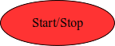
A process block represents statements in which some action is performed. It is shaped like a rectangle. Typically, this block will have one arrow leading into it from a block that was executed before. It will also have an arrow leading out of it to the block that should be executed next. Here is what a process block looks like:
An input/output block is shaped like a parallelogram. These blocks are used whenever an algorithm requires an input or produces an output. Similar to the process block, this block will have an arrow leading to it from a previous block, and an arrow leading out of it to the next block. Here is what an input/output block looks like:
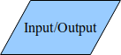
Here is a possible flowchart that represents the solution to the get dressed algorithm:
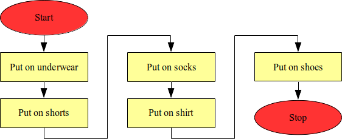
Are there any weaknesses with this algorithm? Will it always work and produce the desired output? For example, will it work if someone already has underwear on? The current algorithm would force the person already wearing underwear to put on a second one. What would happen if the shirt they found was dirty, but they wanted to wear clean clothes instead? This algorithm would force the person to wear the dirty clothes.
These are examples of scenarios that call for decisions to be made and instructions to be decided on that are executed based on answers to simple questions. For example, skipping the put on underwear step would be useful if the person already had underwear on. Perhaps adding a step find clean shirt to the algorithm would handle the case that an original shirt is dirty.
It is difficult to handle these decisions in a traditional to-do list, but flowcharts deal with them in a pretty neat way by using decision blocks. Decision blocks are diamond-shaped and typically contain a question with a yes or no answer. Similar to the previous blocks, the decision block will have one arrow leading into it from the preceding block. However, decision blocks can have two arrows leading out that go to two different blocks. One of those blocks is executed if the answer to the question posed in the decision block is yes, and the other block is executed if the answer is no. Here is what a decision block looks like:
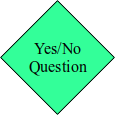
Let’s look at an improved flowchart for the get dressed algorithm that has a decision block. A possible solution is:
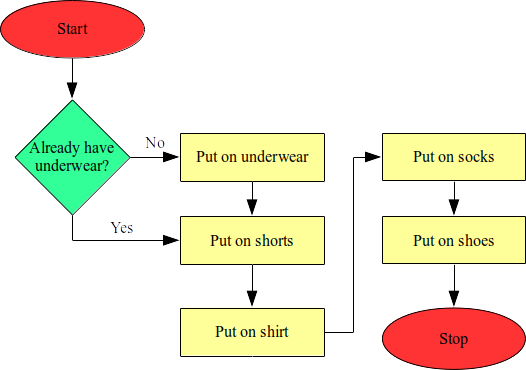
One of the great things about decision blocks (and flowcharts in general) is that you can have different control flows based on decisions made by the algorithm. The algorithm doesn’t always have to behave the same way and can actually change its behavior based on what is happening during its execution. The algorithm designer, however, has to think up all possible scenarios and cater for them when designing an algorithm.
Activity
Design a flowchart for the eat breakfast algorithm. This time, add a decision block with the question am I satisfied? in an appropriate position, such that the algorithm will always ensure that the person eating breakfast only stops eating once satisfied.
5 Repetition
You may have observed from the eat breakfast flowchart that it is possible to use decision blocks to repeat a task an indefinite number of times. Repetition is a feature of many algorithms.
Definition
Repetition is the repeating of a task (or tasks) over and over again. It is accompanied by a decision/condition that controls when the repetition ends. This is sometimes referred to as iterating, and each loop that is repeated is referred to as an iteration.
Sometimes an algorithm designer will know how many times to repeat a certain task (i.e., how many iterations are needed). For this reason, there are many different types of repetition. Some repeat while a condition exists (we formally call this a while loop); some repeat until a condition exists (we formally call this a repeat-until loop); some repeat at least once, while a condition exists (we formally call this a do-while loop); and some repeat a fixed or known number of times (we formally call this a repeat-n loop or a for loop, depending on the programming language used). Flowcharts make the process of repetition easy because connecting arrows can easily be placed to go back to an earlier task.
For the next task, let’s design an algorithm that finds and displays all the prime numbers that are less than 10. Listing all of the prime numbers that are less than 10 is a fairly easy task. However, what about listing all the prime numbers that are less than 100? What about those that are less than 1,000? Or 10,000? As the number gets larger, it becomes much more complicated. This is why designing an algorithm that a computer could execute would be beneficial. Such an algorithm would calculate all of the required prime numbers faster than we could calculate them on our own.
Did you know
In algorithms where a certain task is repeated, it is often necessary to keep track of how many times it has been completed. This is done by declaring and updating what is referred to as a variable. Think of a variable as a container with a name in which we store any piece of data, potentially change it, observe it, and/or compare it with another piece of data as the algorithm is executed.
In the case of repetition, a variable is typically used to represent a number showing how many times a task has been completed. The variable can be called any name we want (the name could be a single letter such as x or n, or even a long word such as theVariableStoringTheValueOfOurCounter). The variable is typically initialized to 0 and is increased by 1 every time a task is completed. When the entire algorithm terminates, the variable will contain the total number of times the task was completed.
The design of an algorithm that displays all of the prime numbers that are less than 10 requires defining what it means for a number to be prime. Formally, a number is prime if it is only evenly divisible by one and itself. For example, 5 is prime but 4 is not (since it is also evenly divisible by 2). The only even prime number is 2.
To simplify the process of designing the algorithm, let’s define a variable, n, to be used to specify the current prime number candidate. Let’s also define a magic step (called is n prime) that will be used to determine whether n is prime (i.e., let’s not do this manually but assume that the question can be asked and an answer provided in a single step). A possible algorithm as a flowchart is:
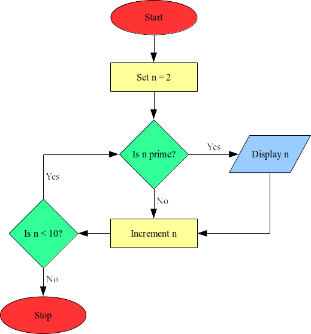
Notice that in the algorithm above, is n prime is repeated for every number (2 through 9 – which is a total of 8 times). If the conditions of the algorithm were changed to find all of the prime numbers below 100, is n prime would be repeated for every number from 2 through 99 (a total of 98 times). This algorithm isn’t the most efficient algorithm, but it gets the job done.
Sometimes the algorithm designer does not know how many times a process is going to be repeated. In such cases, a condition that is needed to be satisfied before the repetition is ended will have to be specified. The statement would then be repeated until that condition is reached. For example, what would an algorithm for stirring sugar into a cup of coffee look like? Would it require stirring five times? 10 times? 100 times? There is no way to tell ahead of time how many times one would have to stir to get the sugar dissolved. However, we know that the stirring should go on while the sugar is not completely dissolved. A possible solution to this is:
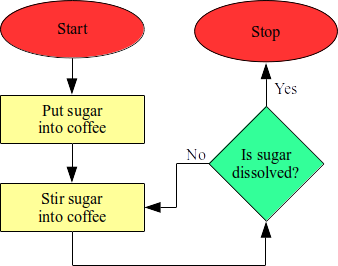
6 Efficiency and runtime
It is sometimes useful to measure and predict the time a computer takes to execute an algorithm. This can help us to compare several solutions to a problem and pick the fastest one, for example.
Definition
Runtime is the time that a computer takes to execute an algorithm.
Most of the algorithms that we have previously considered execute all of their statements once. As a result, they would not take long to be executed by a typical computer (i.e., their runtime would be low). However, algorithms that require repetition have a longer runtime. Consider the find all prime numbers algorithm. If it was adjusted to find all the prime numbers below 100, it would take considerably longer than if it was set to find all the prime numbers below 10. It would take even longer to find all the prime numbers below 1,000. This is because the check if prime process is evaluated for every prime number candidate, and each time it is evaluated the runtime increases.
It is typically desired to design algorithms that have as short of a runtime as possible. Sometimes this calls for designing more intricate or complicated ones; however, only as long as we are sure that the complicated algorithm will have a shorter runtime than the basic algorithm.
Let’s take a look at an interesting problem that will help to show the differences between an algorithm that works and an algorithm that works and is efficient. Consider a square room and an unlimited number of identical square tiles. Can an algorithm be designed to calculate the number of tiles required to cover the entire floor of the room?
There are several ways that this algorithm can be designed.
One approach is to lay down tiles in the entire room and then count them.
Another approach may be to lay down tiles in half of the room, count the number of tiles used, and then double that number.
A third approach may be to lay tiles along one edge of the floor, and multiply the number of tiles laid by itself (i.e., squaring it to find the area of the floor).
The following figure shows the three methods, side-by-side.
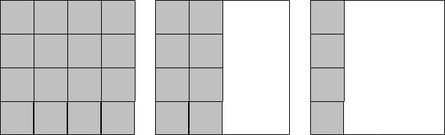
Which solution do you think is the best? What does best mean? Does it mean that the algorithm takes less time? Does it mean that it requires fewer tiles? Does it mean that it requires fewer calculations (and is perhaps less prone to arithmetic errors)? Is there a solution that does not require laying down any tiles at all?
Having multiple solutions (or algorithms) to the same problem is a frequent scenario in computer science. We have mentioned before that best is a very subjective measure for an algorithm. However, there is still a need to compare algorithms and determine which algorithm is better. One of the ways of quantitatively (i.e., numerically) comparing is by using the algorithm’s runtime. Let’s take a closer look at some algorithms that solve the tile laying problem. For simplicity, we will assume that both the room and tiles are square in shape (i.e., the number of tiles required to cover adjacent edges is equal). Note that the algorithm steps are numbered, with sub-steps placed within a single algorithm.
Algorithm 1 (this one covers the entire floor with tiles):
1. set number of tiles currently laid to 0
2. repeat the following steps until the entire floor is covered
2.1. lay a tile on the floor
2.2. add one to the number of tiles currently laid
3. the number of tiles currently laid is the number of tiles neededAlgorithm 2 (this one covers half of the floor with tiles):
1. set number of tiles currently laid to 0
2. repeat the following steps until half of the floor is covered
2.1. lay a tile on the floor
2.2. add one to the number of tiles currently laid
3. multiply the number of tiles currently laid by 2
4. the result is the number of tiles neededAlgorithm 3 (this one covers the length of one wall with tiles):
1. set number of tiles currently laid to 0
2. repeat the following steps until one row has been laid
2.1. lay a tile on the floor
2.2. add one to the number of tiles currently laid
3. multiply the number of tiles currently laid by itself
4. the result is the number of tiles neededWe are now going to figure out which algorithm is better between Algorithm 1 and Algorithm 3 using their runtime. Suppose that the room is 12ft x 12ft and each tile is 1ft x 1ft. Also assume that it takes 10 seconds to lay each tile. How long will Algorithm 1 take to be completely executed? Since Algorithm 1 calls for tiles to be laid across the entire room, the 12ft x 12ft room would then require 144 tiles. Since it takes 10 seconds to lay each tile, it would then take 1,440 seconds to cover the entire room. This is 24 minutes:
\[ 1,440 sec \times \frac{1 min}{60 sec} = 24 min\]
Did you know
Dimensional analysis is a nice way to work through problems with different units (like minutes and seconds), and that require conversion across them. The basic idea is that values can be multiplied by conversion (or dimensional) units that are expressed as fractions. Those units can be canceled out if they appear in both the numerator and denominator. The example above can be rewritten as follows:
\[ \frac{1,440 sec}{1} \times \frac{1 min}{60 sec} = 24 min\]
The sec units in the numerator of the first fraction and the denominator of the second fraction cancel each other out, thereby leaving min as the final unit. Here’s another example that converts days to seconds:
\[ \frac{1 day}{1} \times \frac{24 hr}{1 day} \times \frac{60 min}{1 hr} \times \frac{60 sec}{1 min} = 86,400 sec\]
The day, hr, and min units in the numerator and denominator of the fractions cancel each other out. The only unit left is sec which, once the numerators and denominators are multiplied, represent the number of seconds in one day.
What about Algorithm 3? This algorithm only calls for laying down tiles along one edge of the room to make one row. This means that only 12 tiles will be laid down using this algorithm, a process that would take 120 sec (2 min). But Algorithm 3 also requires a calculation. Let’s assume that this calculation takes 60 sec. The total runtime for Algorithm 3 is then 120 sec + 60 sec = 180 sec (3 min).
So Algorithm 3 is 21 minutes faster than Algorithm 1 for a 12ft x 12ft room. But what happens if the size of the room is changed? What is the performance of both algorithms if they were used to tile a room that is 20ft x 20ft, under the same timing assumptions as before?
We find that Algorithm 1 takes approximately 1 hr 7 min:
\[ \frac{400 tiles}{1} \times \frac{10 sec}{1 tile} = 4,000 sec \] \[ \frac{400 sec}{1} \times \frac{1 sec}{60 sec} \times \frac{1 hr}{60 min} = 1.11 hr \] \[ \frac{0.11 hr}{1} \times \frac{60 min}{1 hr} = 6.6 min \] \[ \frac{0.6 min}{1} \times \frac{60 sec}{1 min} = 36 sec \]
Let’s explain the calculations above.
The first calculates the number of seconds required for Algorithm 1: 4,000 sec.
To represent this in hr, min, and sec, we simply need to convert 4,000 sec to hr (the second calculation): 1.11 hr.
The third calculation takes the fractional portion of this (0.11 hr) and converts it to min: 6.6 min.
The final calculation takes the fractional portion of this (0.6 min) and converts it to sec: 36 sec. The total time is then 1 hr 6 min 36 sec, or approximately 1 hr 7 min.
Algorithm 3 only takes approximately 4.5 minutes:
\[ \frac{20 tiles}{1} \times \frac{10 sec}{1 tile} = 200 sec + 60 sec = 260 sec\] \[\frac{260 sec}{1} \times \frac{1 min}{60 sec} = 4.33 min\] \[\frac{0.33 min}{1} * \frac{60 sec}{1 min} = 19.8 sec\]
Again,
The first calculation gives us the time it takes to lay tiles across a single wall, and then do the 60 sec calculation: 260 sec.
The second calculation converts sec to min.
The final calculation takes the fractional portion of this (0.33 min) and converts it to sec: 19.8 sec.
The total time is then 4 min 19.8 sec, or approximately 4.5 min.
This means Algorithm 3 is over 15 times faster than Algorithm 1 for a 20ft x 20ft room: \[ \frac{4,000 sec}{260 sec} = 15.38\]
Does that mean that Algorithm 3 will always be faster and therefore better than Algorithm 1?
Activity
Try calculating and comparing how long it will take for either algorithm to cover a very small room that is 2ft x 2ft.
What about if the room was 3ft x 3ft? In this case, we find that both algorithms take the same amount of time. The calculation for Algorithm 1:
\[ \frac{9 tiles}{1} \times \frac{10 sec}{1 tile} = 90 sec\]
The calculation for Algorithm 3:
\[ \frac{3 tiles}{1} \times \frac{10 sec}{1 tile} = 30 sec + 60 sec = 90 sec\]
The question of which algorithm is better depends on the size of the room to be tiled. Figure 1 compares the runtime of the two algorithms on differently sized rooms. It is a plot in which the horizontal axis represents the length of one wall of the room (in feet), and the vertical axis represents the amount of time that is required to tile the room (in seconds). The figure illustrates that for rooms less than 3ft x 3ft, Algorithm 1 is faster. In the case where the room is exactly 3 ft x 3 ft both algorithms require the same amount of time. For rooms greater than 3ft x 3ft, Algorithm 3 is faster.
7 Computer programs and pseudocode
So far, we have discussed:
how algorithms are step-by-step solutions to specific problems;
that algorithms can be represented as to-do lists and flowcharts; and
that the runtime of different algorithms for the same problem can be used to compare those algorithms.
However, we did not discuss how algorithms are given to a computer so that it can execute our algorithms for us.
The main benefit in using computers to execute algorithms is that, typically, they are much faster and can process calculations much more quickly than we can. As humans, we speak and write in different languages (one of which is English). On the other hand, computers can only understand a language that is made up of 1s and 0s. We will discuss the details of this machine language later on.
Therefore, there is a need to represent algorithms in a form (or language) that is easy for both a human being and a computer to understand. This helps us to specify algorithms correctly while also allowing computers to execute them quickly. The language that we use to do this is called a programming language. There are many programming languages, some of which you will learn to use in this curriculum. They usually share some similarities with English, and this is what makes it easier to describe our algorithms instead of trying to speak 1s and 0s. When we have represented our algorithm in a programming language, it is referred to as a computer program.
Definition
A programming language is a language designed to communicate instructions to a computer.
It is important to remember that a computer will only blindly follow the instructions that it is given by a human being. It never actually understands the problem that it is solving. It is the responsibility of the programmer to understand the problem and create an algorithm that solves that problem. Good algorithms require creativity, imagination, and a lot of hard work.
The computer programming process can be compared to composing a piece of music. Composing a piece of music takes creativity. The composer then has to transfer the music from his head to a piece of paper in a way that other people can understand and perform it (e.g., music scales). The composer imagines the piece of music and then encodes it as a series of symbols on paper. This process requires skill and creativity. The computer executing a program can be compared to performing the piece of music. The performer goes through a series of mechanical motions as described by the musical scales (or instructions) that were designed by the composer.
Our job as computer scientists is to become very good composers. We will need to learn how to transfer the beautiful ideas that we have in our heads into a series of instructions that a computer can blindly follow to make our music.
One more way of representing algorithms is called pseudocode. This way of representing algorithms was actually shown earlier in this lesson when the tile laying algorithms were described.
Definition
Pseudocode is a way of writing algorithms in a manner that shares similarities with programming languages. It is a mixture of normal English and programming language concepts.
This method of representing algorithms will be used more often than the others in the curriculum. Here is an example of the pseudocode for an algorithm that models the stirring of sugar into coffee:
1. put sugar into coffee
2. repeat
3. stir sugar into coffee
4. until sugar is dissolved
5. stopHere is the pseudocode for displaying all prime numbers less than 10:
1. n ← 1
2. repeat
3. if n is prime
4. then
5. display the value of n
6. end
7. increase n by 1
8. until n >= 10
9. stopIndentation is used to identify grouped instructions, while the numbers on the left become line numbers that make it easier to refer to particular lines in the pseudocode. Finally, assignment of values to variables is done with a left arrow.
8 A tangled web
Can you determine what the flowcharts below do? Try them out with different scenarios.
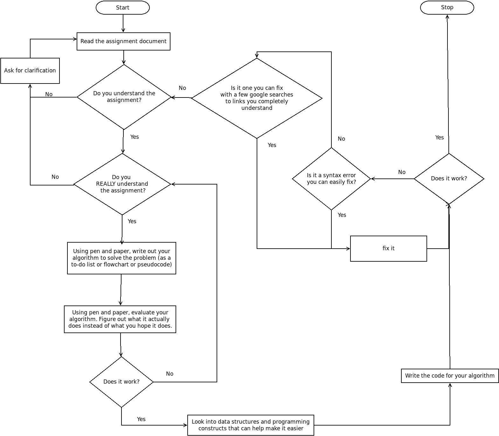
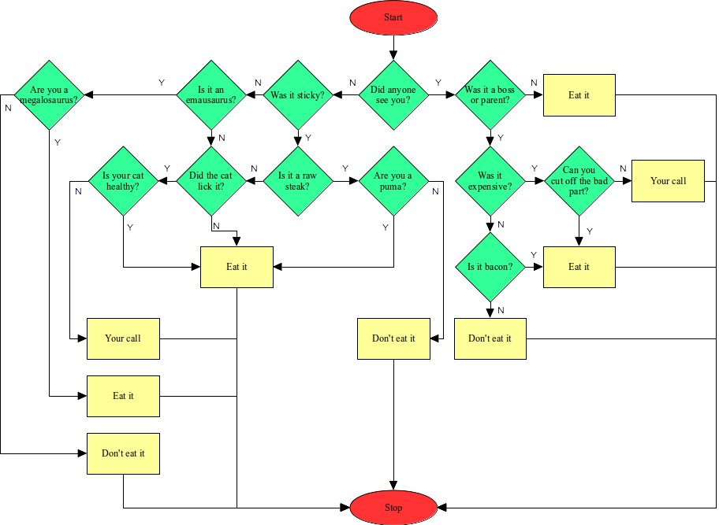
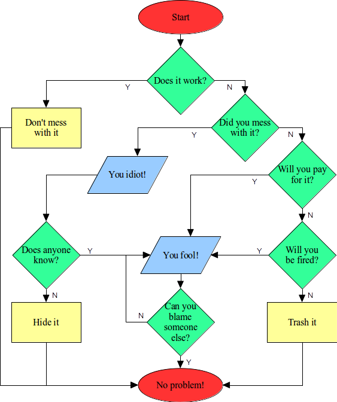